2005年6月5日 小仏峠～陣馬山～大垂水峠山サイ
2005年6月5日、大学のサイクリングクラブの先輩に誘われて、小仏峠～陣馬山～大垂水峠あたりの登山道をMTBでサイクリングに出かけた。
このページを公開した2025年現在、東京近郊の、高尾山や陣馬山などこのあたりの山はMTB完全禁止であるようだ。このページの写真はあくまでも2005年のもので、当時は全然自転車乗りがいないので、とくに目くじら立てられなかった。
高尾駅に集合して、小仏峠へ向かった。小仏峠から登山道へ入る。
ホイールを2セットも持っていないので、わざわざブロックタイヤ（最初に付属してきたもので、ほとんど使っていなかった）に交換した。自転車の写真なのでそのまま貼ってしまうが、大学の先輩は本当に良い自転車に乗っている。
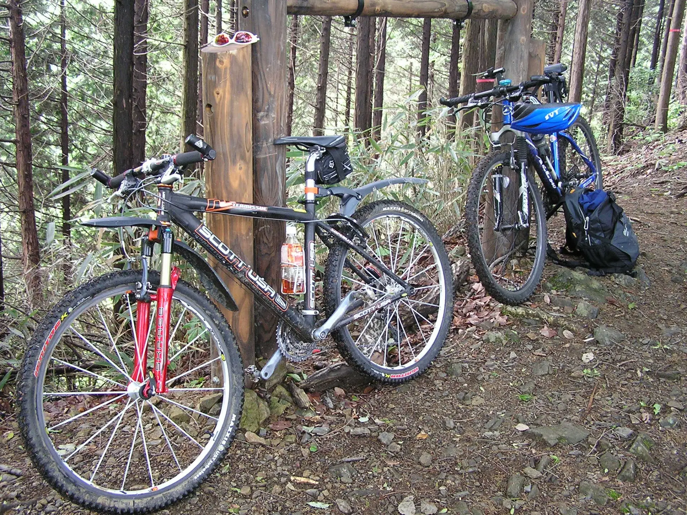小仏峠から、まずは北へ向かう。
この写真の明王峠は、小仏峠と陣馬山の中間の稜線にある峠。ぼかしが強めなのは大学サイクリングクラブのユニフォームを着ているため。
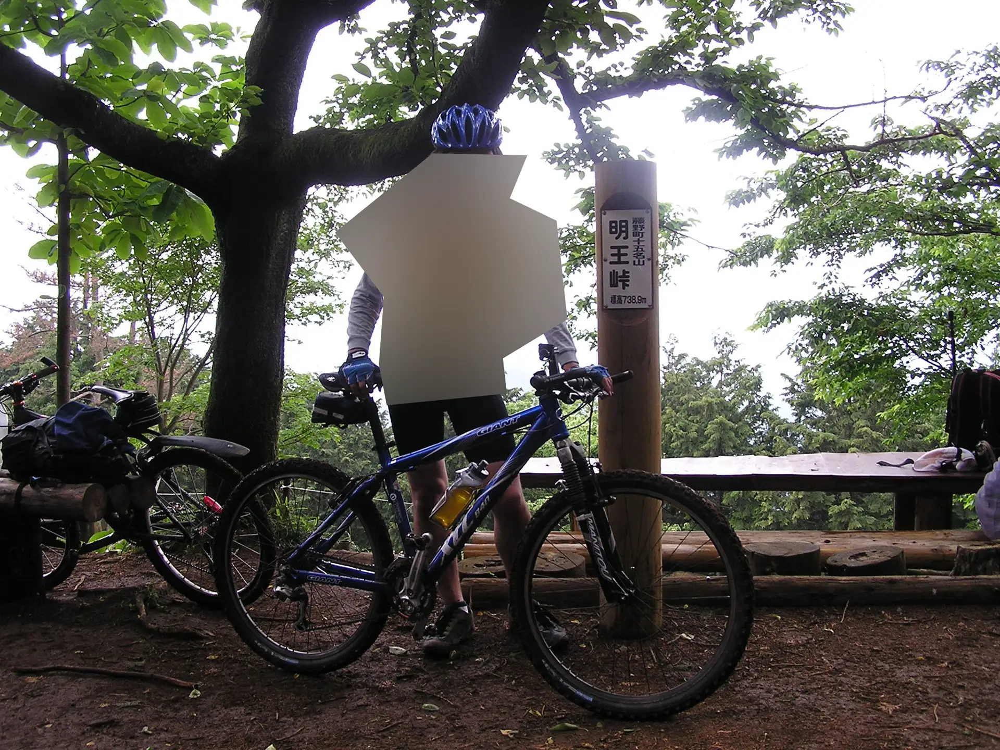 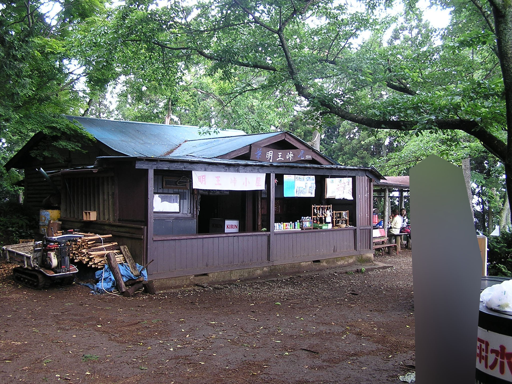当時、PD-M515といういちばん廉価なSPDペダルを使っていたのだが、このようにすぐに泥が詰まってしまった。このあと最廉価帯のSPDペダルはPD-M520にモデルチェンジするが、そちらはクリートの下が穴になっていて泥が詰まりにくくなっている。

陣馬山に着いた。
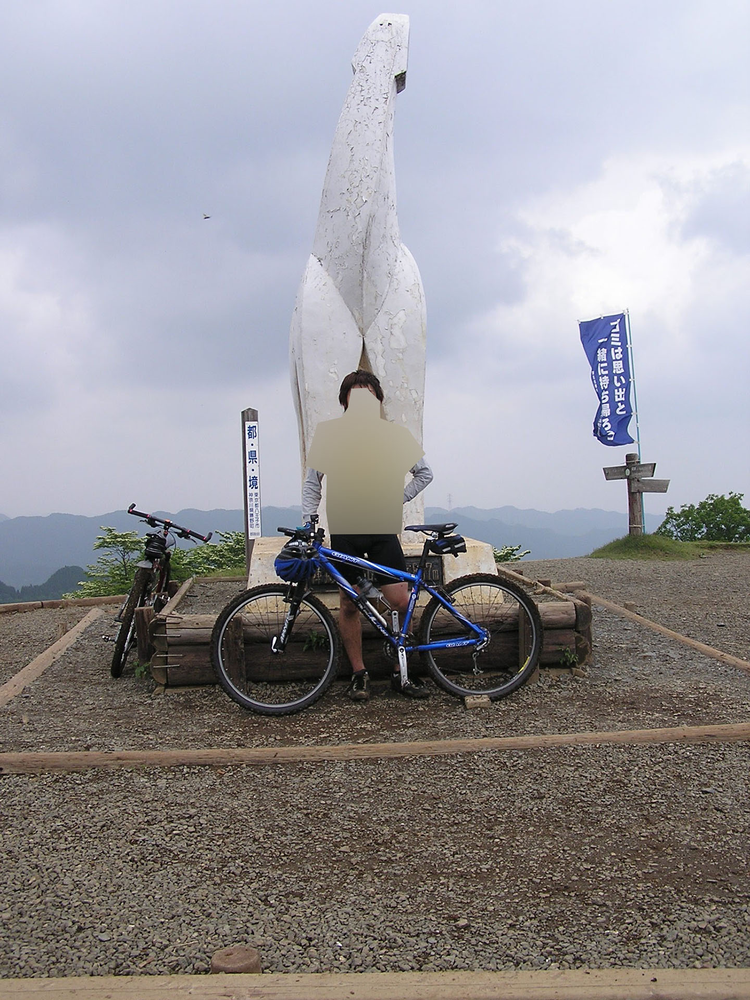そして、ピストンで小仏峠に戻る。
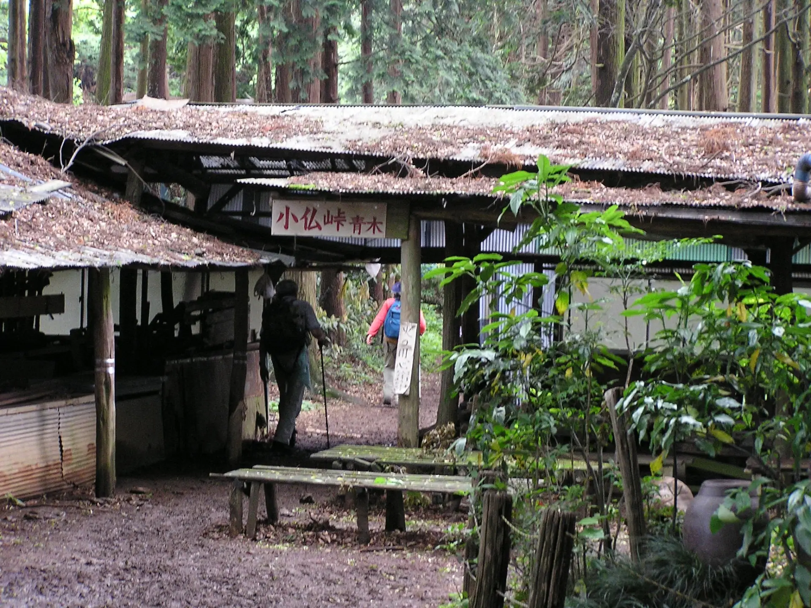途中、地面が塗れていて自転車がかなり汚れてしまった。というか、雨の後にMTBで走るのは本当は登山道を痛めるのでよくないらしい。
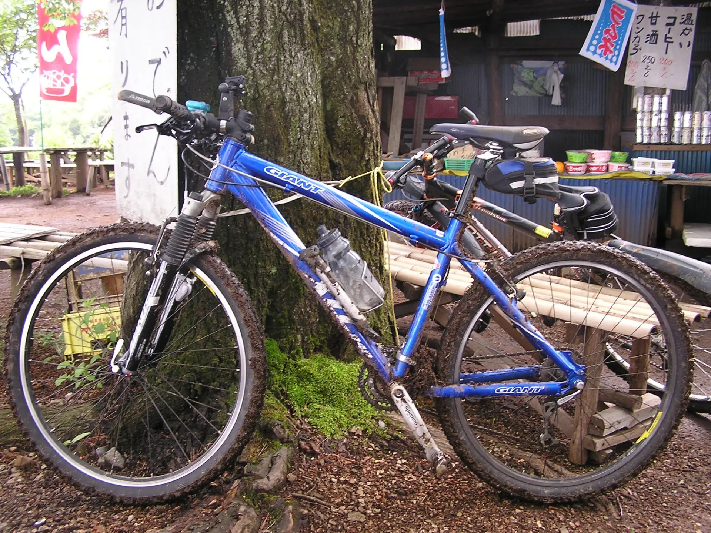当時は趣味人口が少ないし、コミュニティ規模が小さかったので炎上したりしなかったのだろう。
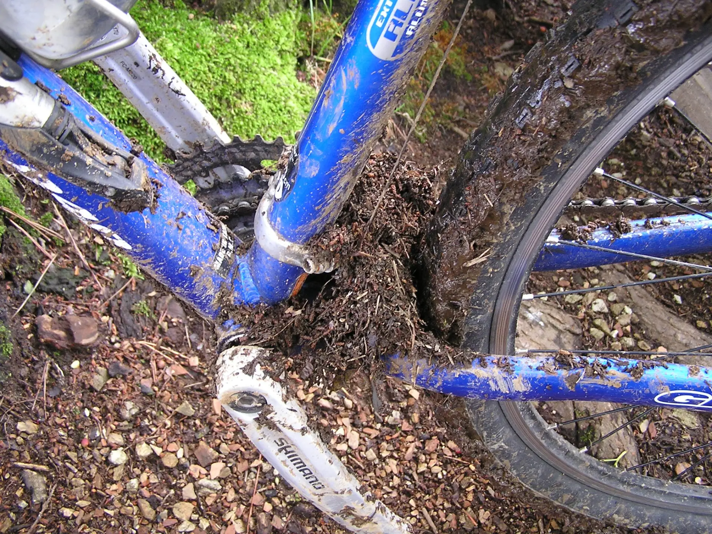小仏城山。小仏峠から南に向かう。
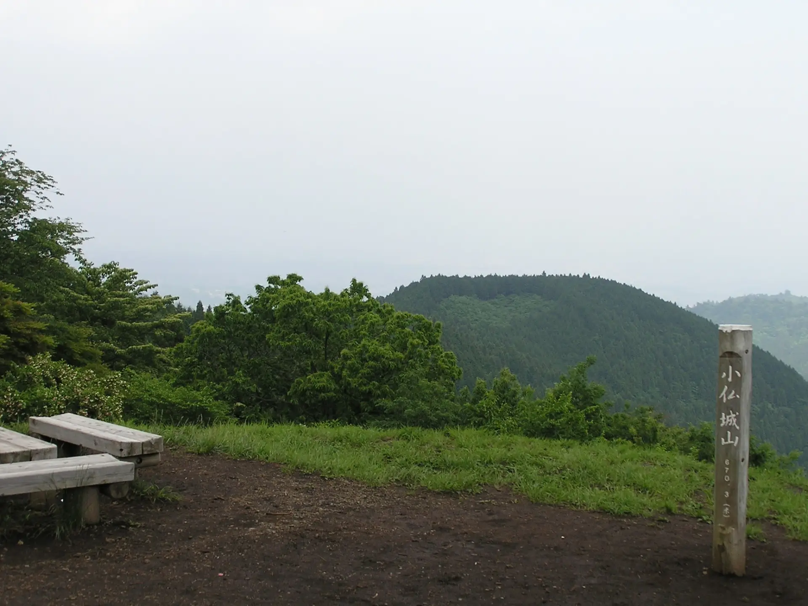このあたりは人が少なく、廃道のような登山道だった。
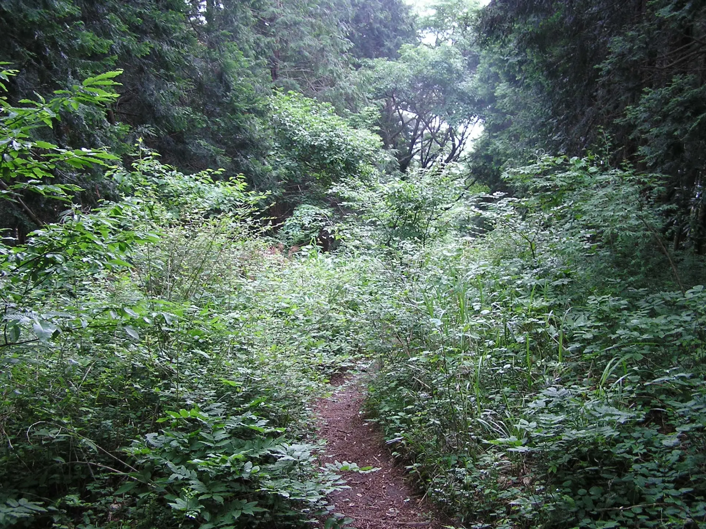大垂水峠に出た。
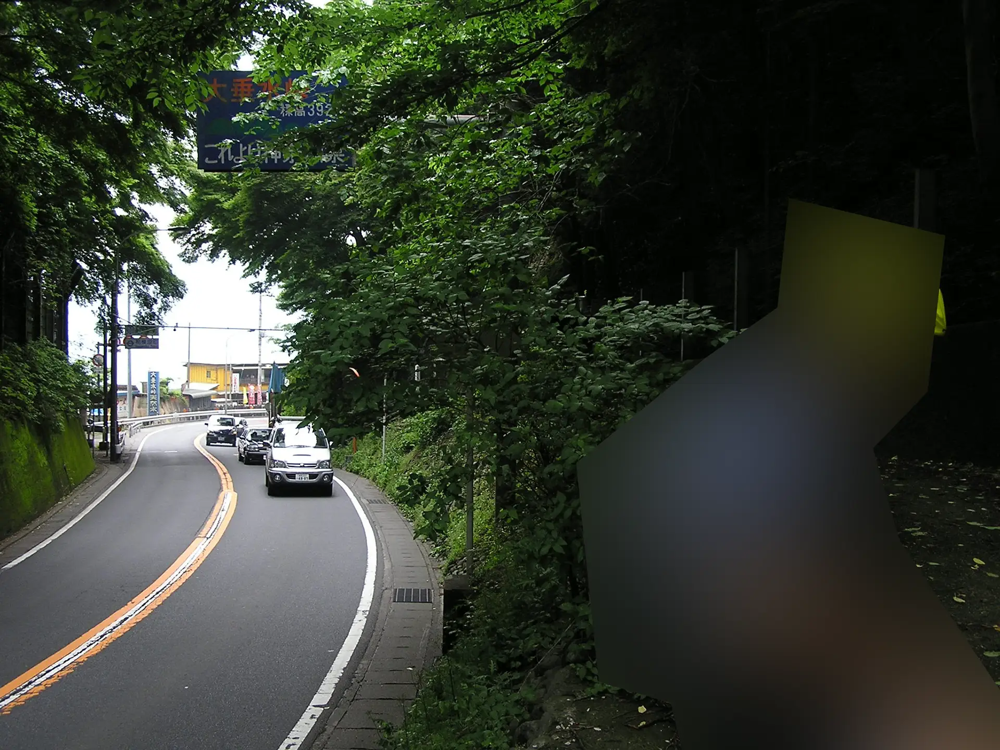国道20号を高尾駅まで下って解散した。
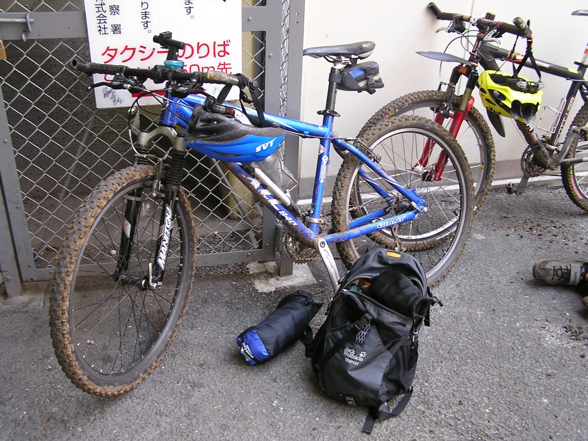2025年12月19日記事公開